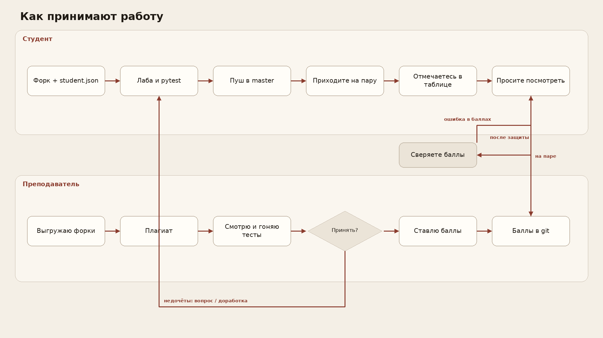

Кто мы, чему учимся, куда класть код, как сдавать и где отмечаться.
Поднимите руку (или стикер):
Это не оценка. Нужно понять, с какой скоростью идти.
Мы изучаем Python как способ записать на машине то же, что вы пишете на бумаге: переменная, формула, повтор шага.
Не курс про карьеру разработчика и не полный CS. Экономистам нужен язык, на котором модель считается без «в уме».
На паре не разбираем каждую конструкцию языка. Учебник:
Не поняли синтаксис — сначала Stepik, потом вопрос. Иначе пара уйдёт в словарь языка.
Лабораторные 1–4 — четыре сюжета, на которых это должно стать привычкой. Остальное — оболочка.
AS_Python_ElCom25_1;…_2; ЭлКом25-3 → …_3.Не форкать витрину AS_Python. Не слать pull request в родителя. Ветка сдачи — master.
student.json (ФИО, группа, зачётка, вариант);1lab/ … 4lab/, пуш в master.Не «залил на гит и забыл». На паре просите посмотреть. Смотрим код, гоняем тесты, говорим.
Баллы ставлю при вас. Потом они появляются в git — сверьте. Ошибка в баллах — сразу скажите.

Дорабатываете, пушите снова, приходите ещё раз. Пока семестр открыт — можно.
Исключение: плагиат > 95% — работа аннулируется. 70–95% — не принимается, пока не переделаете.
Если в git есть .env — работу не смотрю: это ломает скрипты проверки.
Лист своей группы. Пришли — нашли строку — отметка в колонке даты.
Не отметились — для учёта пары вас не было. Нет себя в списке — напишите мне, не создавайте строку в чужом листе.
Правильного IDE нет. Нужен редактор, запуск файла и позже — отладчик.
Python 3.11+. Каталог venv в git не класть. Файл .env в репозитории — работу не смотрю (ломает скрипты проверки).
Print полезен. Если программа «просто падает» — сначала отладчик.
pytest # или python -m pytest
Свои проверки — в Nlab/test_main.py. Рыба с skip — замените. Без тестов лаба не принимается.
ElCom25_N;student.json;